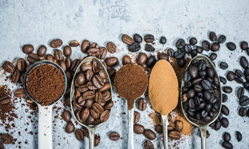

Caffeine is a world’s most consumed psychoactive drug. It usually is consumed through foods like coffee, soda, tea, and chocolate and has a bitter taste. It is a plant alkaloid, found in numerous plant species, where it acts as a natural pesticide that paralyzes and kills certain insects feeding upon them.
